تقييم محاكاة المجرات كميًا بالمقارنة مع الأرصاد الحقيقية باستخدام كشف الشذوذ
الملخص
تُعد محاكاة تشكّل المجرات في الإطار الكوني أدوات قوية لفهم العمليات المعقدة التي تحكم تشكّل المجرات وتطورها. ومع ذلك، لا يزال تقييم واقعية هذه المحاكاة تحديًا قائمًا. ويتمثل النهجان الشائعان لتقييم محاكاة المجرات إما في استخدام علاقات القياس المبنية على عدد قليل من الخواص الفيزيائية الأساسية للمجرات، وإما في استخدام مجموعة من المعاملات المورفولوجية المحددة مسبقًا بالاعتماد على صور المجرات. تقترح هذه الورقة طريقة جديدة، قائمة على الصور، لتقييم جودة محاكاة المجرات باستخدام تقنيات كشف الشذوذ بالتعلم العميق غير الخاضع للإشراف. ومن خلال مقارنة صور المجرات الكاملة، يستطيع نهجنا تحديد الفروق بين المجرات المحاكاة والمرصودة وقياسها كميًا. وكتطبيق توضيحي، نطبق هذه الطريقة على تصوير SDSS ومحاكاة NIHAO بنماذج فيزيائية ومعاملات ودقات مختلفة. كما نقارن مقياس طريقتنا بعلاقات القياس وبالمعاملات المورفولوجية. ونبيّن أن كشف الشذوذ قادر على التقاط أوجه التشابه والاختلاف بين الأجسام الحقيقية والمحاكاة التي تعجز علاقات القياس والمعاملات المورفولوجية عن تغطيتها، ومن ثم فإنه يقدّم بالفعل منظورًا جديدًا للتحقق من صحة المحاكاة الكونية ومعايرتها في ضوء البيانات المرصودة.
keywords:
المجرات: التشكّل، المجرات: التطور، الطرائق: تحليل البيانات، الطرائق: عددية، الطرائق: إحصائية، الكوازارات: الثقوب السوداء فائقة الكتلة1 المقدمة
تُعد المحاكاة الكونية إحدى أقوى الأدوات لاختبار فهمنا للكون (Vogelsberger et al., 2020). وبفضل التطور المزدهر في القدرة الحاسوبية، أصبحت المحاكاة الهيدروديناميكية عالية الدقة قادرة على نمذجة تشكّل المجرات وتطورها، مع تتبع كل من المادة المظلمة والباريونات عبر الزمن الكوني. وقد نجحت المحاكاة الحديثة إلى حد كبير في إعادة إنتاج طيف واسع من خواص المجرات، مثل الكتلة النجمية، ومنحنيات الدوران، والوفرة الكيميائية، والألوان، وعلاقات القياس (مثلًا Vogelsberger et al., 2014; Stinson et al., 2012; Dubois et al., 2016; Schaye et al., 2015; Wang et al., 2015; Tremmel et al., 2017; Dutton et al., 2017; Pillepich et al., 2018; Nelson et al., 2017; Buck, 2019).
إن فحص مدى الاتفاق بين الأرصاد الحقيقية والمحاكاة هو أفضل وسيلة لتقييم جودة المحاكاة، وهو أمر حاسم لاختبار الفيزياء الممثلة في المحاكاة وتحسينها. وبوجه عام، كانت المقارنة بين توزيع خواص المجرات المستخرجة من المحاكاة ومن الأرصاد تُستخدم أداة تشخيصية. وفي فضاء معاملات متعدد الأبعاد، يُجرى هذا التشخيص عبر علاقات قياس المجرات. ومن أمثلة ذلك علاقة Tully-Fisher (Tully & Fisher, 1977)، وعلاقة الحجم بالكتلة (Courteau et al., 2007)، وعلاقة الكتلة النجمية بكتلة الهالة (Moster et al., 2010; Moster et al., 2018)، وعلاقة الكتلة بالمعدنية (Tremonti et al., 2004; Gallazzi et al., 2005; Kirby et al., 2015)، على سبيل المثال لا الحصر. وغالبًا ما يُستخدم الاتفاق بين هذه العلاقات في المجرات الحقيقية والمجرات المحاكاة مقياسًا للحكم على ما إذا كانت المحاكاة «جيدة».
وعلى الرغم من أن علاقات القياس من أكثر الطرق شيوعًا لتقييم صلاحية المحاكاة الكونية، فإنها «تضغط» مليارات نقاط البيانات التي تولدها المحاكاة إلى مجموعة من بضعة أرقام تُقارن بالأرقام القليلة نفسها المستخلصة بدورها من كمية هائلة من بيانات الأرصاد. ولا مفر من ضياع قدر كبير من المعلومات الموجودة في المحاكاة والأرصاد معًا خلال هذه العملية. ونتيجة لذلك، قد تلائم محاكاة ما مجموعة من علاقات القياس المرصودة، بينما تنحرف في الوقت نفسه عن مجموعة أخرى من علاقات القياس. والأشد صعوبة هو تحديد أي مجموعة من علاقات القياس أكثر أهمية تحديدًا كميًا عندما تظهر تناقضات فيما بينها. ومن الطبيعي عندئذ البحث عن طرائق بديلة للمقارنة بين البيانات والنموذج، من أجل الاستفادة الكاملة من الدقة (المكانية) الكبيرة التي بلغها كل من الطرفين حديثًا.
وبالفعل، بُذلت جهود كبيرة في تحليل صور المجرات باستخدام مقاييس وإحصاءات متنوعة، منها ما هو معلمي مثل معاملات Sérsic (Sérsic, 1963)، ومنها ما هو غير معلمي مثل معامل Gini، و، وإحصاءات الانتفاخ (نظام Gini-، Lotz et al., 2004)، والتركيز، واللاتناظر، والنعومة (إحصاءات CAS، Conselice, 2003)، وتعدد الأنماط، والشدة، والانحراف (إحصاءات MID، Freeman et al., 2013). وقد بدأت المقارنة بين توزيع هذه المعاملات القائمة على الصور في الصور الصورية وبين نظيراتها في الصور الحقيقية تؤدي الآن دور إحدى الأدوات الحاسمة في معايرة المحاكاة الحديثة (Snyder et al., 2015; Bottrell et al., 2017a, b; Rodriguez-Gomez et al., 2019; Bignone et al., 2020; de Graaff et al., 2022). وعلى مر السنين، ورغم اقتراح المزيد من المعاملات المورفولوجية وتحسن فهمنا لصور المجرات، لا يزال من الصعب استغلال فضاء المعاملات بالكامل لوصف صورة مجرة بطريقة خاضعة للإشراف وموجّهة بشريًا.
كان التعرف على الصور وتوليدها من أبرز إنجازات مجال التعلم العميق، بدءًا من المحاولات المبكرة للتمييز بين القطط والكلاب، وصولًا إلى مولدات الوجوه بالذكاء الاصطناعي (AI)، وحديثًا جدًا إلى شقيق ChatGPT، وهو ذكاء اصطناعي مذهل للرسم يُسمى DALL-E. وقد حاول الفيزيائيون الفلكيون أيضًا تطبيق تقنيات التعلم الآلي لمعالجة مسائلهم العلمية، ولا سيما تلك المرتبطة بصور المجرات (مثلًا Dieleman et al., 2015; Storey-Fisher et al., 2021; Buck & Wolf, 2021; Obreja et al., 2018; Buder et al., 2021; Cheng et al., 2021; Smith et al., 2022). ويُظهر عمل حديث جدًا لـ (Tohill et al., 2023) كذلك أن التعلم غير الخاضع للإشراف المدرَّب على صور المجرات يستطيع ترميز الصور في سمات، يرتبط بعضها بمعاملات مورفولوجية معروفة مثل دليل Sérsic، واللاتناظر، والتركيز (انظر Tohill et al. 2023 الجدول 3).
وعلى وجه الخصوص، تملك خوارزميات كشف الشذوذ بالتعلم العميق إمكانية أن تكون قوية جدًا عند مقارنة صور المجرات المحاكاة والحقيقية. في مثل هذه الدراسات، تُعامل صور المجرات المرصودة الحقيقية بوصفها صورًا «طبيعية»، وتُسند شبكة عصبية «درجات شذوذ» إلى صور المجرات المحاكاة، بحيث تقيس كميًا مدى واقعية هذه الصور المحاكاة. استخدم Margalef-Bentabol et al. (2020) شبكة Wasserstein التوليدية التنافسية (WGANs) (Arjovsky et al., 2017) للعثور على القيم الشاذة في محاكاة Horizon-AGN (Dubois et al., 2014)، مع صور CANDELS في نطاق H (Grogin et al., 2011; Koekemoer et al., 2011) بوصفها «المعيار الطبيعي»، وخسارة WGAN بوصفها درجة الشذوذ. كما حسّن Zanisi et al. (2021) أداء خوارزمية كشف الشذوذ من خلال الجمع بين مخرجات شبكتين منفصلتين من PixelCNN (Oord et al., 2016) لتوليد درجة شذوذ على مستوى البكسل من دون تلوث بخلفية السماء. وفي عملهم، قورنت محاكاة Illustris (Vogelsberger et al., 2014) وIllustrisTNG (Nelson et al., 2017) بصور Sloan Digital Sky Survey (SDSS) في نطاق ، ورُصدت أوجه عدم اتفاق في التفاصيل المورفولوجية الصغيرة المقياس. وفي هذا العمل سنستخدم GANomaly (Akcay et al., 2019)، الذي يتميز ببنية مولِّد من نوع مُرمِّز-مُفكِّك-مُرمِّز وبدرجة شذوذ أفضل تعريفًا، لمقارنة محاكاة NIHAO (Numerical Investigation of Hundred Astrophysical Objects) (Wang et al., 2015) بصور مجرات SDSS RGB ثلاثية الألوان (نطاقات --). ويُعد GANomaly طريقة مباشرة وموجزة وفعالة لاشتقاق درجات شذوذ لا ترتبط إلا بسمات المجرات لا بضجيج الخلفية، مع تحديد موضع الشذوذ في الوقت نفسه11 1 النموذج متاح للعموم في https://github.com/ZehaoJin/Rate-galaxy-simulation-with-Anomaly-Detection.
تُنظم هذه الورقة كما يأتي: في القسم 2 سنعرض مجموعات مختلفة من محاكاة NIHAO التي سيقيّمها GANomaly لاحقًا. وفي القسم 3 نستعرض مجموعة التدريب المستخدمة في هذا العمل، وهي صور مجرات SDSS. ويعرض القسم 4 كيفية عمل GANomaly ودرجة الشذوذ. وتقدم الأقسام 5 و6 و7 و8 النتائج الرئيسة لهذه الورقة، والمقارنة بعلاقات القياس والمعاملات المورفولوجية، إضافة إلى نقاش وتفسير إضافيين لدرجات الشذوذ. ونختتم في القسم 9، ونستكشف فضاء السمات الكامن وراء GANomaly في الملحق A بمحاولة تفسير الفضاء الكامن باستخدام تحليل المركبات الرئيسة (PCA) وإسناد معنى فيزيائي إليه.
2 المحاكاة
نستخدم النسخة «الأساسية» من محاكاة NIHAO (ويشار إليها فيما بعد باسم ‘NIHAO NoAGN’) وتنوعاتها NIHAO AGN وNIHAO n80 وNIHAO UHD لإجراء مقارنة عبر نماذج فيزياء تشكّل المجرات ومعاملاتها ودقاتها المختلفة. ثم تُرصد هذه المجرات المحاكاة رصدًا صوريًا في هيئة صور RGB على نمط SDSS. وأخيرًا يقيّم GANomaly الصور المرصودة صوريًا من حيث درجات الشذوذ. وتُعرض أدناه تفاصيل محاكاة NIHAO ومخطط الرصد الصوري.
2.1 NIHAO NoAGN
محاكاة NIHAO (Numerical Investigation of Hundred Astrophysical Objects) (Wang et al., 2015; Blank et al., 2019) هي حزمة من المحاكاة الكونية الهيدروديناميكية المكبرة، وتعمل بشيفرة GASOLINE2 (Wadsley et al., 2017). وتعتمد NIHAO كوسمولوجيا CDM مسطحة ومعاملات مستمدة من نتائج القمر الصناعي Planck (Planck Collaboration et al., 2014). وتتضمن NIHAO تبريد Compton، والتأين الضوئي بفعل الخلفية فوق البنفسجية وفقًا لـ Haardt & Madau (2012)، وتشكّل النجوم والتغذية الراجعة من المستعرات العظمى (Stinson et al., 2006) والنجوم الضخمة (Stinson et al., 2012)، وتبريد المعادن، والإثراء الكيميائي. وقد أثبتت سلسلة من الأعمال السابقة أن مجرات NIHAO المحاكاة تعيد إنتاج علاقات قياس المجرات بصورة جيدة جدًا، بما في ذلك علاقة الكتلة النجمية بكتلة الهالة (Wang et al., 2015)، وعلاقة كتلة غاز القرص وحجم القرص (Macciò et al., 2016)، وعلاقة Tully-Fisher (Dutton et al., 2017)، وتنوع منحنيات دوران المجرات (Santos-Santos et al., 2017)، وعلاقة الكتلة بالمعدنية (Buck et al., 2021).
نشير إلى هذه النسخة الأساسية (المفصلة في Wang et al. (2015)) من محاكاة NIHAO باسم ‘NIHAO NoAGN’. وتمثل NIHAO NoAGN الأساس الذي تقوم عليه التنوعات الأخرى من NIHAO الموصوفة في الأقسام الفرعية أدناه.
2.2 NIHAO AGN
كما يوحي الاسم، لا تحتوي ‘NIHAO NoAGN’ على فيزياء النوى المجرية النشطة (AGN). وبما أنه من المقبول على نطاق واسع أن التغذية الراجعة للثقوب السوداء حاسمة في إخماد المجرات الإهليلجية (مثلًا Croton et al., 2006; Dutton et al., 2015) فقد أدخل Blank et al. (2019) تشكّل الثقوب السوداء وتراكمها وتغذيتها الراجعة في مشروع NIHAO. في NIHAO AGN تُزرع بذرة ثقب أسود عندما تتجاوز الهالة المركزية عتبة كتلة معينة، ثم تتبع نموذج التراكم (Bondi, 1952) والتغذية الراجعة الذي قدمه Springel et al. (2005)، وهو أحد أكثر النماذج استخدامًا ومن ثم اختبارًا. ويمكن العثور على مزيد من التفاصيل بشأن تطبيق AGN في NIHAO في Blank et al. (2019)، وكذلك في Waterval et al. (2022) للاطلاع على ملخص جيد.
عمليًا، NIHAO AGN هي إعادة تشغيل لـ NIHAO NoAGN، بالشروط الابتدائية والمعاملات والفيزياء نفسها تمامًا، باستثناء إضافة تطبيق AGN، وبذلك توفر النظير المزود بـ AGN لكل مجرات NIHAO الأساسية. وهي مثالية لاختبار أثر نموذج AGN المطبق من خلال مقارنة نظائر AGN وNoAGN بعلاقات القياس(Frosst et al., 2022; Waterval et al., 2022)، أو الآن على نحو أفضل، بدرجات الشذوذ لدينا.
2.3 NIHAO n80
ينطوي تشكّل المجرات على مجال ديناميكي هائل، من السحب الجزيئية إلى البيئة واسعة النطاق، مما يجعل حل بعض العمليات الأساسية بالكامل أمرًا مستحيلًا. وعادة ما تُعتمد نماذج فعالة، غالبًا ذات معاملات وعتبات، في المحاكاة العددية الكونية لمعالجة مشكلة ما دون الدقة هذه (Springel & Hernquist, 2003). فعلى سبيل المثال، يُنمذج تشكّل النجوم عادة بعتبة كثافة ، بوحدات الجسيمات لكل . ولا تبدأ جسيمات الغاز بالتحول إلى جسيمات نجمية، أي تكوين النجوم، إلا عندما تُبلغ هذه العتبة. ورغم أن قيمة «المتوقعة» في الكون الحقيقي تتجاوز (McKee & Ostriker, 2007)، فإن هذه الكثافة خارج نطاق المنال حتى لأعلى محاكاة لمجرة حلزونية دقة، كما استعرض Vogelsberger et al. (2020). وفي الواقع، تميل المحاكاة الكونية الرائدة حاليًا إلى استخدام حول في الطرف الأدنى، مثل EAGLE (Schaye et al., 2014) وIllustris (Vogelsberger et al., 2014) وIllustrisTNG (Nelson et al., 2017)، وحول في الطرف الأعلى، مثل Governato et al. (2010) وFIRE (Oñorbe et al., 2015) وBrook & Di Cintio (2015) وVINTERGATAN Agertz et al. (2021) وNIHAO (Wang et al., 2015). وتُضبط القيمة الدقيقة لـ عادةً باستخدام علاقات قياس المجرات.
تستخدم كل محاكاة NIHAO الأخرى الموصوفة في هذا العمل، وهي NIHAO NoAGN وNIHAO AGN وNIHAO UHD، القيمة . ولاستكشاف قيم أخرى لـ ، أنتج Macciò et al. (2022) بضع عمليات إعادة تشغيل لمجرات NIHAO NoAGN باستخدام . وللتوضيح، لا تتضمن مجرات NIHAO n80 هذه فيزياء AGN، ولها دقة (كتلية) مماثلة لدقة NIHAO NoAGN وNIHAO AGN، لكن فيها مضبوط على 80 بدلًا من 10 . وللاطلاع على دراسة موسعة لأثر عتبة تشكّل النجوم في خواص مجرات NIHAO، انظر Dutton et al. (2019); Buck et al. (2019b); Dutton et al. (2020).
2.4 NIHAO UHD
تمتلك NIHAO NoAGN أصلًا دقة جيدة إلى حد بعيد: إذ تمتد كتلة جسيم المادة المظلمة من للمجرات القزمة إلى لأضخم المجرات. وتكون النسبة بين كتل جسيمات المادة المظلمة والغاز في البداية مساوية لنسبة كتلة المادة المظلمة إلى الباريونات الكونية، . وتُضبط أطوال تليين القوة لجسيمات الغاز والنجوم لتكون أصغر بنحو 2.34 مرات من أطوال تليين جسيمات المادة المظلمة (Wang et al., 2015). وإضافة إلى ذلك، اختير عدد قليل من المجرات الشبيهة بدرب التبانة لإعادة محاكاتها بدقة أعلى (). يقدم Buck et al. (2020) حزمة NIHAO UHD (Ultra High Definition)، التي تحتوي على نظائر أعلى دقة لست مجرات من NIHAO NoAGN، بالشروط الابتدائية نفسها والمعاملات نفسها () والفيزياء نفسها (من دون AGN). وتُظهر تلك المجرات تقاربًا ممتازًا لمحاكاة NIHAO، وتبين توافقًا جيدًا بين دالة كتلة التوابع في MW وM31 (Buck et al., 2019a) وخواص انتفاخ MW (Buck et al., 2018, 2019c).
2.5 صور الرصد الصوري
في هذا العمل، نستخدم 77 مجرة NIHAO NoAGN، و77 مجرة NIHAO AGN، و12 مجرة NIHAO n80، و6 مجرة NIHAO UHD، مع إسقاط كل مجرة على طول 20 محاور موجهة عشوائيًا. ثم تُرصد هذه المحاكاة المجرية رصدًا صوريًا في نطاقات SDSS -- كصور مجرات ، أولًا عبر انتقال إشعاعي باستخدام SKIRT (Camps & Baes, 2020) باتباع المنهجية نفسها الواردة في Faucher et al. (2023)، ثم تُعالج لاحقًا بالاعتماد على RealSim (Bottrell et al., 2017a, b; Bottrell et al., 2019) للحصول على صور صورية واقعية.
يُعد SKIRT من أكثر شيفرات الانتقال الإشعاعي استخدامًا لإنتاج صور مجرات تركيبية مثالية من المحاكاة. ولكل جسيم نجمي، وبافتراض دالة كتلة ابتدائية (IMF) من Chabrier (Chabrier, 2003)، نسند توزيع طاقة طيفي (SED) من FSPS (Conroy et al., 2009; Conroy et al., 2010; Foreman-Mackey et al., 2015) باستخدام متساويات العمر MIST (Paxton et al., 2011; Paxton et al., 2013, 2015; Choi et al., 2016; Dotter, 2016) ومكتبة MILES الطيفية (Sánchez-Blázquez_2006) وفق عمره ومعدنيته وكتلته. تُؤخذ عينات الفوتونات من SED، وتُطلق على نحو متساوي الخواص في إطار سكون الجسيم ثم تُزاح لاحقًا بفعل دوبلر. ولتقليل العشوائية في تواريخ تشكّل النجوم الناتجة عن نمذجة تجمعات النجوم كجسيمات مفردة، نطبق وصفة تحت شبكية تُنعّم فعليًا تواريخ تشكّل النجوم المحاكاة بحيث يكون الفرق النموذجي في العمر بين جسيمين نجميين شابين متجاورين (بالمعنى الزمني) أقل من Myr، وهي المدة الزمنية التي تُظهر خلالها أطياف التجمعات النجمية تغيرًا ملحوظًا. وبالنسبة إلى الجسيمات النجمية الأصغر عمرًا من 10 Myr، نحتاج أيضًا إلى احتساب الامتصاص والإصدار بواسطة الغبار داخل مناطق التفكك الضوئي (PDRs) الناتجة عن بقايا سحب الميلاد للنجوم المتشكلة حديثًا. ولأن هذه المناطق تقع دون الدقة المكانية للمحاكاة، نعتمد الطريقة الشائعة الاستخدام (Groves et al., 2008; Jonsson et al., 2010; Hayward & Smith, 2015; Trayford et al., 2017; Trčka_2020; Kapoor et al., 2021; Faucher et al., 2023) المتمثلة في إسناد SEDs من MAPPINGS-III، والتي تتضمن مسبقًا آثار التأين الضوئي والحجب داخل هذه السحب الجزيئية الكثيفة. ويتميز هذا النموذج بمعامل حر واحد يصف زمن إزالة السحب الجزيئية، ويؤخذ مساويًا لـ 2.5 Myrs وفقًا لـ Faucher et al. (2023). وبما أن محاكاة NIHAO لا تنمذج تجمع الغبار مباشرة، نفترض أن كل جسيم غازي يحتوي على كتلة غبار مقدارها 10% من كتلته في المعادن. كما نفترض عدم وجود غبار في الغاز فوق درجة حرارة قصوى تبلغ 16,000K. ولإجراء حسابات الانتقال الإشعاعي، نُجزئ الفضاء باستخدام شبكة مكانية من نوع OctTree نقسمها حتى تحتوي كل خلية شبكية على جسيم غازي واحد على الأكثر. ويُحدد الحجم الظاهري الفيزيائي لكل صورة مجرة من توزيع جسيمات المادة المظلمة المنتمية إلى الهالة الرئيسة للمجرة، كما يحدده كاشف الهالات AHF(Knollmann & Knebe, 2009). ويتراوح مقياس البكسل في صور NIHAO الصورية حول 0.58 - 3.74 kpc/pixel. ويمكن العثور على مزيد من التفاصيل ومخرجات نموذجية لإجرائنا في الانتقال الإشعاعي في Faucher et al. (2023).
نضيف بعد ذلك واقعية رصدية تشمل الالتفاف بدالة انتشار النقطة (PSF)، وضجيج اللقطات، وضجيج السماء الغاوسي، وتمديد arcsinh بالاعتماد على شيفرة RealSim الخاصة بـ Bottrell et al. (2017a, b); Bottrell et al. (2019). وللالتفاف مع PSF الخاصة بـ SDSS، نعتمد PSF غاوسية بعرض كامل عند نصف القيمة العظمى (FWHM) يساوي متوسط الرؤية في جميع مجرات SDSS Legacy ( و و لنطاقات SDSS --). وتُحوّل العروض الفيزيائية للمجرات المحاكاة إلى أحجام زاوية بوضعها افتراضيًا عند مسافة انزياح أحمر 0.109، وهو متوسط الانزياح الأحمر لعينة التدريب من SDSS لدينا. أما ضجيج اللقطات فهو ضجيج Poisson تحدده نقاط الصفر، والكتلة الهوائية، والانطفاء، وكسب CCD في حقول المسح. ويُستحصل ضجيج السماء الغاوسي من متوسط ضجيج السماء عبر جميع مجرات Legacy. وأخيرًا، يُطبق تمديد arcsinh الذي اقترحه Lupton et al. (2004) لاتباع مخطط التصوير القياسي في SDSS.
3 البيانات الرصدية
3.1 قصاصات صور مجرات SDSS
يُعد SDSS (Blanton et al., 2017) أحد أكبر المسوح الجارية لرسم خريطة كوننا. وتتيح أداة قص الصور في SDSS الحصول على شرائح صور RGB عند الموضع والعرض المطلوبين. ويأتي اللون الأحمر في صور SDSS من مرشح SDSS القريب من تحت الأحمر () ()، واللون الأخضر من مرشح SDSS الأحمر () ()، واللون الأزرق من مرشح SDSS الأخضر () (). وللحصول على صور المجرات، نستخدم فهرس المجرات الذي أعده Meert et al. (2014)، والذي يوفر الإحداثيات والكتل النجمية لـ 670,722 مجرة. ومن خلال أداة قص الصور في SDSS22 2 نوفر السكربت اللازم لتنزيل مجموعة بيانات SDSS كاملة في https://github.com/ZehaoJin/Rate-galaxy-simulation-with-Anomaly-Detection/blob/main/SDSS_cutouts/download_cutouts.py.، نقتطع بكسل حول إحداثيات كل مجرة بمقياس بكسل كاميرا SDSS (). ويمكن العثور على أمثلة لصور SDSS في الشكل 3.
نضع كذلك حدًا على الكتلة النجمية عند لتجنب التلوث من النجوم. وتملك عينات SDSS هذه انزياحًا أحمر من 0.005 - 0.395، بمتوسط انزياح أحمر يبلغ 0.109، لتُقارن بلقطات NIHAO عند انزياح أحمر 0. وأخيرًا، تُقسم هذه الصور إلى مجموعة تدريب تضم 579,197 صورة، ومجموعة اختبار تضم 64,356 صورة. وخلال مرحلة التدريب، لا ترى الشبكة العصبية إلا صور مجموعة التدريب. وبعد اكتمال تدريب GANomaly، ستُستخدم مجموعة الاختبار للتحقق من أداء التدريب وستُستخدم في التحليل المعروض في هذه الورقة.
3.2 إحصاءات عينة NIHAO مقابل SDSS
اختيرت كل مجرات NIHAO المعروضة في هذا العمل بحيث تكون لها كتلة نجمية ، بما يتوافق مع حد الكتلة النجمية المفروض على مجرات SDSS33 3 نجا 77 من أصل 127 أزواج من مجرات NIHAO NoAGN/AGN، و12 من أصل 20 مجرات NIHAO n80، و6 من أصل 6 مجرات NIHAO UHD من حد الكتلة النجمية.. يبين الشكل 1 توزيع الكتلة النجمية لمجرات NIHAO وSDSS. وتشترك العينات الثلاث كلها في نطاق مشابه من الكتلة النجمية، لكن التوزيع الدقيق على امتداد نطاق الكتلة يختلف. وتوزيع الكتلة في NIHAO NoAGN وNIHAO AGN متماثل إلى حد ما، ولا سيما عند الطرف الأدنى، لأن AGN لا يؤدي دورًا رئيسًا في المجرات الأقل كتلة مقارنة بالمجرات عالية الكتلة. وبحكم البناء، تملك عينتا NIHAO توزيعًا متقارب الانتظام ضمن نطاق الكتلة، مع عدد أعلى قليلًا من المجرات الأعلى كتلة، في حين تملك SDSS قمة في حاوية الكتلة المتوسطة ونقصًا في حاويتي الكتلة المنخفضة والعالية. وبما أن GANomaly تعلّم اعتمادًا على صور SDSS فقط، فمن المعقول أن تتعرف الشبكة العصبية إلى المجرات متوسطة الكتلة على نحو أفضل قليلًا من المجرات منخفضة وعالية الكتلة. نحن ندرك أثر الاختيار هذا، وسنقارن المجرات الواقعة في حاويات الكتلة نفسها للتغلب على هذه المسألة. ويمكن العثور على مزيد من النقاش حول كيفية تأثير الكتلة النجمية في درجة الشذوذ في القسم 5. وسنتعامل مع مجرات NIHAO UHD وNIHAO n80 كلًا على حدة لاحقًا في هذه الورقة، لأن تعدادها محدود. وكتلتها النجمية مشابهة جدًا لكتلة نظيرتها في NIHAO NoAGN.
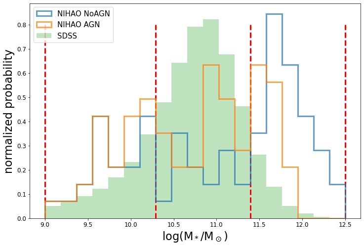
4 GANomaly
4.1 كشف الشذوذ بإعادة البناء
GANomaly (Akcay et al., 2019) هو نموذج لكشف الشذوذ قائم على شبكة توليدية تنافسية (GAN) (Goodfellow et al., 2014)، مستوحى من AnoGAN (Schlegl et al., 2017) وBiGAN (Donahue et al., 2016) وEGBAD (Zenati et al., 2018). يكشف GANomaly الشذوذ من خلال إعادة بناء الصور. ويُدرّب GANomaly على إعادة بناء الصور الطبيعية (غير الشاذة) بتعلّم السمات المشتركة شيوعًا في مجموعة الصور الطبيعية. وبعد انتهاء التدريب، ينبغي أن يكون GANomaly قادرًا فقط على إعادة بناء الصور الطبيعية، وأن يفشل في إعادة بناء أي شذوذ. ومن ثم تكشف المقارنة بين الصورة الأصلية والمعاد بناؤها عن الشذوذ.
4.2 بنية الشبكة
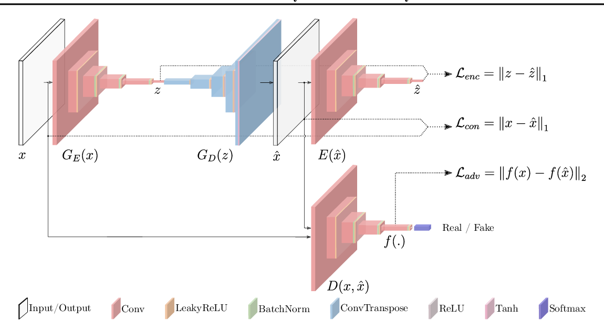
على وجه التحديد، يوضح الشكل 2 بنية GANomaly. وبصفته تنويعًا على GAN، يتكون GANomaly من شبكة مولِّد (المُرمِّز والمُفكِّك ) وشبكة مميِّز ، مع مُرمِّز إضافي . تمر صورة الدخل ( في هذا العمل) أولًا عبر جزء المُرمِّز من المولِّد وتُرمَّز، أو تُلخّص في صورة ( في هذا العمل)، أي تمثيل فضاء السمات للصورة . ثم تصبح دخلًا للمُفكِّك الذي يخرج ()، وهي النسخة المعاد بناؤها من . وأخيرًا، تُرسل المعاد بناؤها إلى مُرمِّز آخر وتُرمَّز في ()، وهو تمثيل السمات للصورة المعاد بناؤها . وفي الأثناء، يأخذ المميِّز بصورة مجهولة كلًا من صورة الدخل الأصلية والصورة المعاد بناؤها ، ويحاول تحديد أيهما صورة الدخل الحقيقية وأيهما الصورة الزائفة التي ولّدها المولِّد. وهكذا يكون المولِّد والمميِّز في حالة تنافس ويتطوران معًا: إذ يحاول المولِّد خداع المميِّز بتوليد صور أكثر فأكثر واقعية، بينما يتعلم المميِّز أن يبقى حادًا ويميز الصور المولدة من الصور الحقيقية.
4.3 الخسارة ودرجة الشذوذ
لبلوغ هدف إعادة بناء الصور بنجاح، تُعرَّف ثلاث دوال خسارة ويجري تقليلها أثناء التدريب.
خسارة التنافس، : تحرك خسارة التنافس المنافسة بين المولِّد والمميِّز من خلال بيان ما إذا كان المميِّز قد نجح في التمييز بين الصور الحقيقية والمولدة. وبخلاف GAN الأساسية حيث تكون خسارة التنافس ثنائية ببساطة، صحيحة أو خاطئة44 4 يمكن أن تعمل خسارة تنافس ثنائية بسيطة في GANomaly أيضًا، فإن خسارة التنافس هنا، تبعًا لـ Schlegl et al. (2017) وZenati et al. (2018)، تعتمد على التمثيل الداخلي للمميِّز .
| (1) |
حيث إن طبقة وسيطة داخل المميِّز D. وتحسب دالة الخسارة هذه مسافة بين تمثيل السمات للصورة الأصلية والصورة المولدة. لاحظ أنه على الرغم من أن و كلاهما تمثيل سمات لـ ، فإنهما مختلفان. تأتي من طبقة في المميِّز، وستُدرَّب السمات كي تساعد على أفضل وجه في التمييز بين الصور الحقيقية والمولدة؛ أما فتأتي من المُرمِّز، وستخدم السمات على أفضل وجه إعادة بناء .
الخسارة السياقية، : تقارن الخسارة السياقية مباشرة بين صورة الدخل والصورة المولدة باستخدام مسافة ،
| (2) |
إن تقليل يدفع ببساطة الدخل والبناء إلى أن يكونا متطابقين قدر الإمكان، وبذلك تُتعلّم المعلومات السياقية للصور الطبيعية.
خسارة المُرمِّز، : خسارة المُرمِّز هي مسافة بين تمثيل السمات المُرمَّز للأصل والمعاد بناؤه .
| (3) |
يسمح تقليل للمولِّد بتعلّم كيفية التقاط سمات صورة غير شاذة.
وبوجه عام، يتمثل هدف تدريب GANomaly في تقليل المجموع الموزون للخسائر الثلاث:
| (4) |
حيث تتيح و و ضبط أهمية الخسائر الثلاث.
أما درجة شذوذ الدخل ، أي ، فلن تستخدم دالة الخسارة الكلية، بل تستخدم فقط الفرق في فضاء السمات . ويمكن استخدام الخسارة السياقية ، رغم أنها غير مرتبطة مباشرة بدرجة الشذوذ، لاستنتاج موضع الشذوذ.
| (5) |
4.4 التدريب
يُدرَّب GANomaly فقط على مجموعة التدريب المؤلفة من 579,197 صورة SDSS حقيقية. وتُضبط أبعاد الدخل/الخرج () على ، وتُختار أبعاد فضاء السمات () لتكون . لاحظ أن بعد فضاء السمات أحد المعاملات الفائقة التي تتسم بقدر من الاعتباطية ويمكن ضبطها. وليست «السمات» مستقلة تمامًا ومتعامدة بعضها مع بعض، ولذلك يصعب تفسير فضاء السمات. يستطيع المُرمِّز تلخيص صورة في 128 بتًا، لكنه يستطيع أيضًا تلخيص الصورة نفسها بالكامل في 64 بتًا أو 256 بتًا. دُرّبت الشبكة العصبية على مدى 50 تكرار على مجموعة التدريب، بأوزان خسارة و و55 5 أوزان الخسارة نفسها المستخدمة في Akcay et al. (2019). تبدو مرتفعة لأن يُوسَّط على بكسلًا. وسيُخفف التباين السياقي المحلي بعد التوسيط، مما يتطلب وزنًا أعلى.، وحجم دفعة 64، ومعدل تعلم ، ومُحسِّن Adam . استغرق التدريب كله نحو 150 ساعات على وحدة GPU مزدوجة من نوع NVIDIA Quadro P1000 بذاكرة تقارب 4GB.
5 النتائج
5.1 نظرة عامة
بعد التدريب على مجموعة تدريب SDSS، نطبق GANomaly على مجموعة اختبار SDSS وعلى صور NIHAO لدينا. لاحظ أن صور مجموعة اختبار SDSS لم تُعرض قط على GANomaly خلال مرحلة التدريب، ومن الآن فصاعدًا فإن كل صور SDSS المذكورة مأخوذة من مجموعة اختبار SDSS. وتُعرض مجموعة من مخرجات GANomaly النموذجية في الشكل 3 بصيغة [الأصلية، المعاد بناؤها، المتبقي]، مع درجة الشذوذ في الأعلى. لاحظ أن درجة الشذوذ طُبِّعت اعتمادًا على أدنى الدرجات وأعلاها في عينة SDSS، ومن ثم فهي تتراوح بين 0 و1 بالنسبة إلى SDSS (حالة أعلى درجة شذوذ، 1، هي حالة «الرؤية السوداء» في SDSS). ويمكن لصورة غير SDSS أن تحصل على درجات أعلى من 1 إذا كانت أشد غرابة حتى من حالة «الرؤية السوداء»، مثل التفاحة في الشكل 3. وتعني درجة شذوذ أقل أن الصورة تحتوي على شذوذ أقل في فضاء السمات، أو بصورة مبسطة أن صورة المجرة ذات درجة الشذوذ الأقل أكثر واقعية. وكما يظهر في المعرض، تُعاد بناء صور مجرات SDSS بصورة جيدة، مع متبقيات ضئيلة جدًا ودرجة شذوذ منخفضة للغاية. غير أن GANomaly يفشل في إعادة بناء أي شذوذ أو أي مجرة غير SDSS، مثل التفاحة، والرؤية السوداء، وحالة الشعاع الكوني (الصف السفلي في الشكل 3). وتُعاد بناء مجرات NIHAO المحاكاة بصورة جيدة إلى حد معقول وفق خريطة المتبقيات ودرجة الشذوذ. ويُعرض توزيع درجات الشذوذ لجميع صور مجموعة اختبار SDSS مقابل جميع صور NIHAO NoAGN وNIHAO AGN في الشكل 4. يتداخل توزيعا NIHAO NoAGN وNIHAO AGN مع توزيع SDSS بنحو في المئة، لكن كليهما لا يستطيع بلوغ الدرجة المنخفضة جدًا التي يبلغ عندها توزيع SDSS ذروته، وكلاهما يملك ذيلًا أكبر من ذيل توزيع SDSS. ويشير ذلك إلى أن محاكاة NIHAO هي عمومًا محاكاة واقعية للمجرات، لكنها لا تزال تملك مجالًا للتحسين. وسيُعرض أدناه تفسير أدق لدرجات الشذوذ عبر مجموعات مختلفة من محاكاة NIHAO.
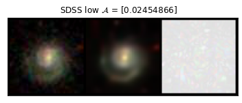
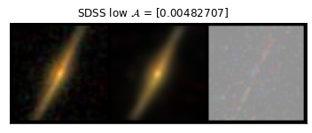
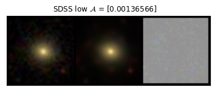
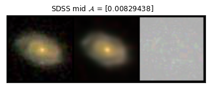
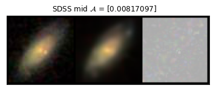
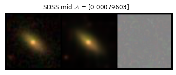
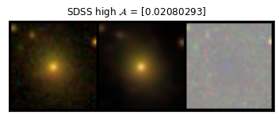
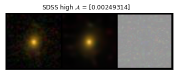
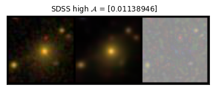
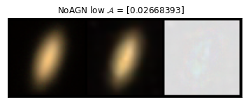
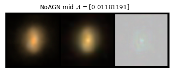
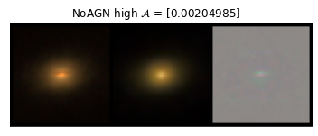
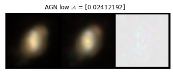
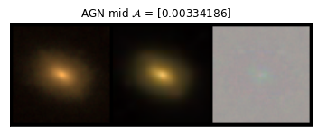
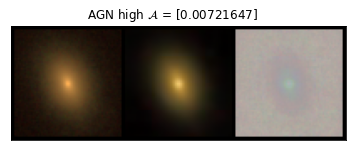
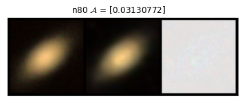
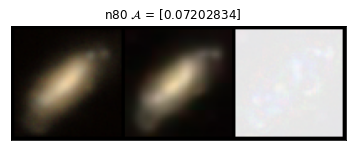
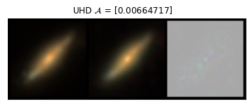
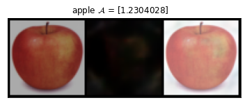
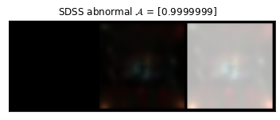
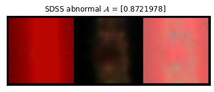
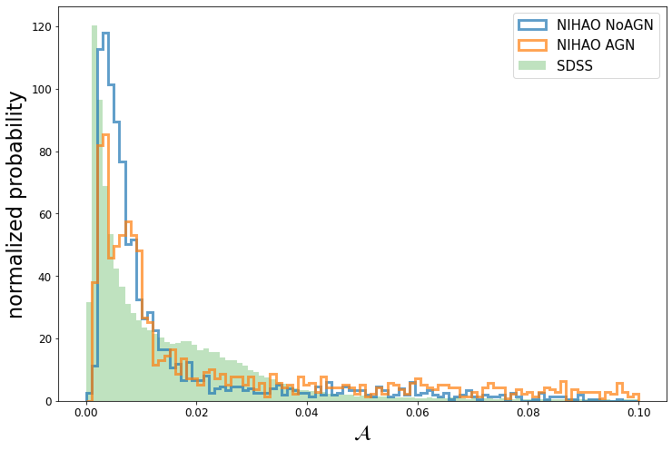
5.2 NIHAO NoAGN مقابل NIHAO AGN في حاويات الكتلة
لأن الكتلة النجمية لا تتوزع بانتظام في مجموعة تدريب SDSS (الشكل 1)، ولأن اختلاف الكتلة النجمية يمكن أن يؤدي إلى مورفولوجيات مجرية متمايزة، فإن GANomaly سيفضل المجرات ذات كتل نجمية معينة، كما يبين الشكل 5. فالمجرات الأقل كتلة، بسبب جهدها الثقالي الأضعف، تكون بطبيعتها أكثر لاانتظامًا أو شذوذًا من حيث المورفولوجيا مقارنة بالمجرات الأعلى كتلة في حاويات الكتلة المتوسطة والعالية. ويؤدي الشذوذ الذاتي وتعداد الكتلة النجمية غير المتوازن في مجموعة التدريب معًا إلى جعل مجرات SDSS في حاوية الكتلة المنخفضة ذات درجات شذوذ أعلى من نظيراتها في حاويتي الكتلة المتوسطة والعالية. ولتحقيق مقارنة عادلة، نضع مجرات SDSS وNIHAO في حاويات كتلة منخفضة ومتوسطة وعالية، ونقارن التوزيع ضمن النطاق الكتلي نفسه.
يُعتقد أن التغذية الراجعة لـ AGN أساسية في إخماد المجرات الضخمة، ومن ثم يتوقع المرء فرقًا ضئيلًا في درجة الشذوذ بين NIHAO NoAGN وNIHAO AGN في حاوية الكتلة المنخفضة، بينما ينبغي لدرجة شذوذ NIHAO AGN أن تتفوق على NIHAO NoAGN كلما اتجهنا إلى كتل نجمية أعلى، إذا كان تطبيق AGN واقعيًا. يبين الشكل 6 توزيع درجات الشذوذ لكل من NIHAO NoAGN وNIHAO AGN وSDSS في كل واحدة من حاويات الكتلة الثلاث. وتبلغ مساحة التداخل (بالنسبة المئوية من مساحة SDSS) بين NIHAO وSDSS لكل من AGN مقابل NoAGN في حاويات الكتلة المنخفضة والمتوسطة والعالية 62 في المئة مقابل 68 في المئة، و66 في المئة مقابل 59 في المئة، و74 في المئة مقابل 63 في المئة66 6 لاحظ أن مساحة التداخل تعتمد على اختيار التقسيم إلى حاويات، ولذلك فهي لا تقيس مباشرة جودة NIHAO NoAGN أو NIHAO AGN إحداهما على الأخرى.. يبين الرسم أن لا NoAGN ولا AGN يتفوق على الآخر تفوقًا ملحوظًا في أي من حاويات الكتلة. وتشير مساحة التداخل إلى أنه في حاوية الكتلة المنخفضة لا يوجد فرق يذكر بين NIHAO NoAGN وNIHAO AGN لأن الثقوب السوداء لا تؤدي دورًا رئيسًا هناك، كما هو متوقع. أما في حاوية الكتلة المتوسطة، ولا سيما في حاوية الكتلة العالية، فيبدأ AGN بإظهار أفضلية طفيفة على NoAGN. وبصريًا، تأتي أفضلية AGN في حاوية الكتلة العالية من أن AGN يعيد إنتاج القمة الثانية حول درجة شذوذ 0.01 - 0.03 أفضل قليلًا مما يفعل NoAGN.
وباختصار، يلمح GANomaly إلى تحسن طفيف في نمذجة المجرات الأعلى كتلة عند تطبيق AGN، لكنه عمومًا يعلن تعادلًا بين الأداء الكلي مع AGN ومن دونه. وبالمثل، عند استخدام PixelCNN وتوزيع نسبة اللوغاريتم الاحتمالي (LLR) الخاص بها (وهو شبيه بتوزيع درجة الشذوذ هنا) لمقارنة صور SDSS في نطاق ، وجد Zanisi et al. (2021) تحسنًا هامشيًا فقط للمجرات الساكنة من Illustris إلى IllustrisTNG رغم اختلاف تطبيق التغذية الراجعة لـ AGN فيهما. يأخذ GANomaly صور مجرات مرصودة صوريًا، أي خرائط توزيع الضوء المطبّعة في نطاقات SDSS --، ولذلك يبدو أن تطبيقات AGN الحالية في NIHAO لا تملك «أثرًا صافيًا» في خرائط توزيع ضوء المجرات المطبّعة وفقًا لـ GANomaly. وفي القسم 7 سنعرض مزيدًا حول كيف تبدو درجات الشذوذ «غير حساسة» لنماذج AGN الحالية في NIHAO.
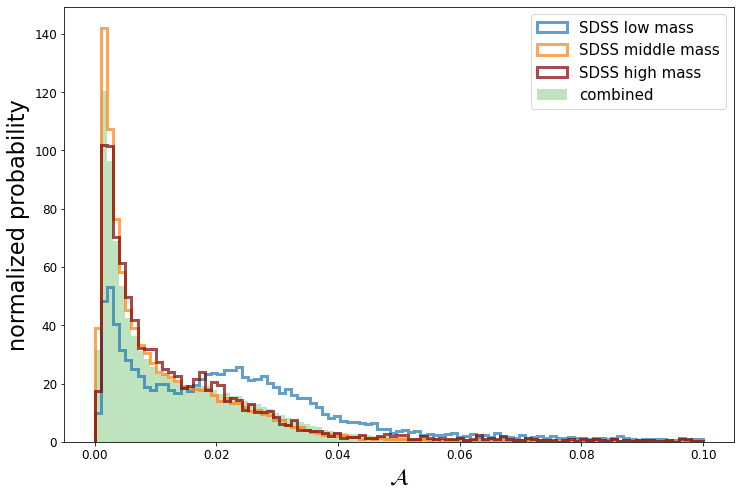
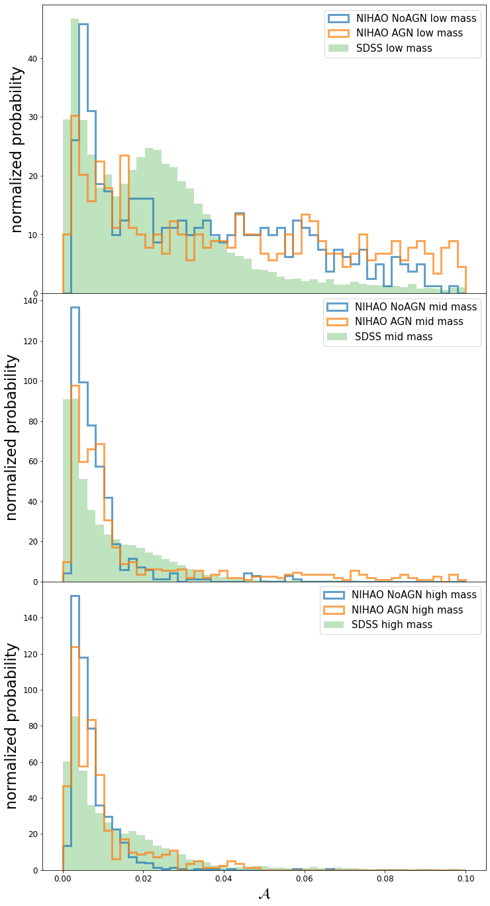
5.3 أثر عتبة تشكّل النجوم
من بين 81 مجرة NIHAO NoAGN مستخدمة في هذا العمل، لدينا 12 مجرات لها نظائر NIHAO n80. لا تتضمن مجرات NIHAO n80 هذه تطبيق AGN، ولها عتبة كثافة لتشكّل النجوم مقدارها بدلًا من كما في NIHAO NoAGN (انظر القسم 2.3). وفي هذا القسم، سنشير إلى المقارنة بين هذه الأزواج 12 من المجرات باسم NIHAO n80 مقابل NIHAO n10 توخيًا للوضوح. ولاستقصاء هذا ، نقارن أداء درجة الشذوذ لـ مقابل مجرة مجرةً، كما يظهر في الشكل 7. وبالنسبة إلى هذه الأزواج 12 من المجرات، لا تُظهر المجرات الأقل كتلة () فرقًا واضحًا بين n80 وn10 في درجة الشذوذ، بينما تُظهر المجرات الأعلى كتلة () درجة شذوذ أفضل (أدنى) في NIHAO n10. وهذا يعني أن تبدو خيارًا أفضل من في إعداد شبيه بـ NIHAO NoAGN للمجرات عالية الكتلة. وهذه نتيجة مثيرة للاهتمام تختلف عن Macciò et al. (2022)، الذي يبين أن خيار أفضل اعتمادًا على فحص خريطة الغاز بدلًا من خريطة الضوء النجمي المدروسة في هذا العمل. وتشير النتائج المتباينة المستخلصة من منظورات متنوعة إلى أن مقياسًا واحدًا لا يكفي لضبط المعاملات أو العتبات الفعالة في المحاكاة الكونية، وأن القيمة المثلى لـ تستحق مزيدًا من الدراسة في أعمال مستقبلية.
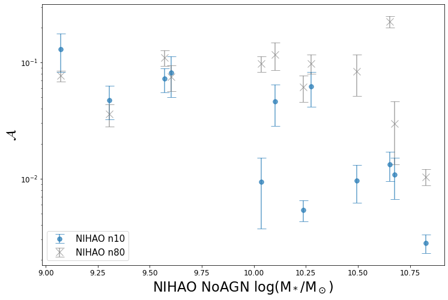
5.4 أثر الدقة
بطريقة مشابهة لحالة n80، نقارن 6 أزواج من مجرات NIHAO NoAGN (ويشار إليها في هذا القسم باسم ‘NIHAO HD’) ومجرات NIHAO UHD. وللتذكير، فإن الفرق الوحيد بينها هو أن NIHAO UHD أعلى دقة من NIHAO HD. يبين الشكل 8 أنه في جميع المجرات 6 تكون درجات الشذوذ شبه متطابقة عبر الدقات المختلفة. ويرجع ذلك إلى أن كلًا من HD وUHD ستكون لهما فعليًا صور صورية بالدقة نفسها بعد الالتفاف مع PSF. ويبين المستوى نفسه من أداء درجة الشذوذ أن NIHAO HD قادرة على إنتاج صور مجرات على نمط SDSS بجودة NIHAO HUD نفسها وبكلفة حاسوبية أدنى بكثير.
كما نعرض صورة المجرة المواجهة وإعادة بناء GANomaly لمجرتين من NIHAO لهما نظائر في جميع عينات NoAGN وAGN وn80 وUHD في الشكل 9. ويُعرض متوسط درجة الشذوذ لكل مجرة NIHAO ولكل مجرة اختبار SDSS في الشكل 10. ومرة أخرى، من حيث درجات الشذوذ، تنتهي مقارنة NIHAO AGN مقابل NIHAO AGN إلى تعادل مع أفضلية هامشية لـ NIHAO AGN عند الكتل الأعلى، ويتفوق NIHAO n10 على NIHAO n80 (أي NIHAO NoAGN) عند الكتل الأعلى، وتنتهي مقارنة NIHAO UHD مقابل NIHAO HD (أي NIHAO NoAGN) إلى تعادل.
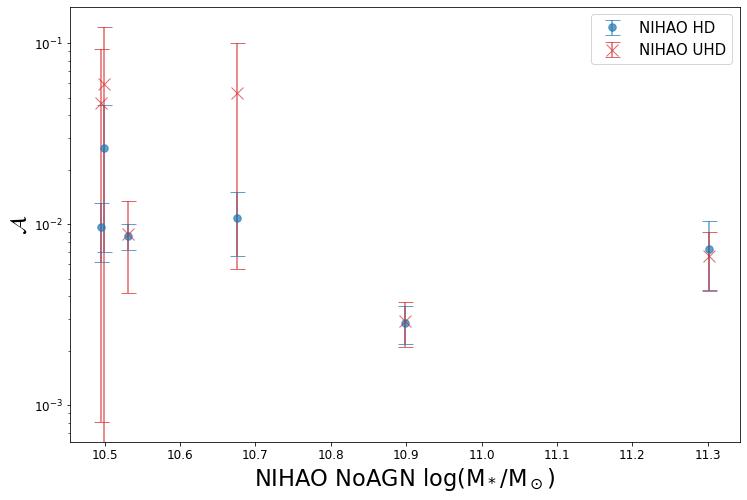
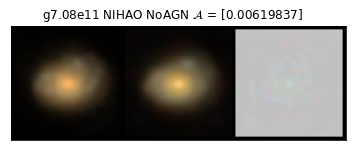
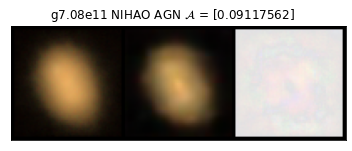
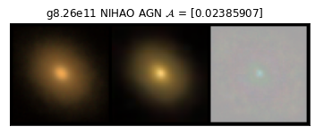
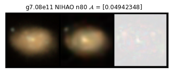
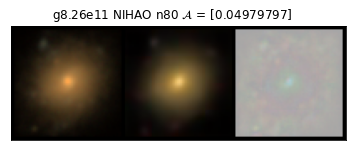
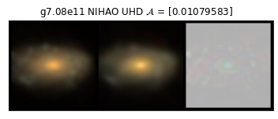
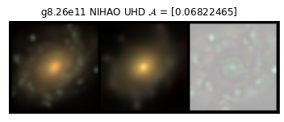
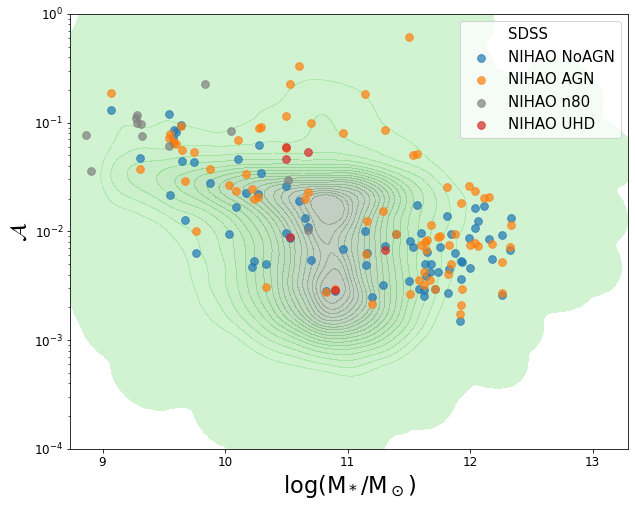
6 علاقات القياس
إن الالتزام بعلاقات القياس معيار شائع الاستخدام لتقييم المجرات المحاكاة، ومن الطبيعي أن نتساءل عما إذا كان معيار علاقات القياس يتفق مع درجات الشذوذ في GANomaly. ومن منظور قائم على علاقات القياس، يقارن Arora et al. (2023) مجرات NIHAO المحاكاة مع مجرة من النوع المتأخر من مسح Mapping Nearby Galaxy at Apache point (MaNGA) (Bundy et al., 2015). وتُجرى المقارنات باستخدام علاقات قياس بنيوية متعددة الأبعاد تتضمن كميات مثل الحجم (R)، والكتلة النجمية ()، والسرعة الدورانية (V)، والكثافة السطحية النجمية داخل 1 kpc (). حيث تُقدر R و و باستخدام قياسات ضوئية بصرية grz من مسح DESI77 7 Dark Energy Sky Instrument (DESI Collaboration et al., 2016) (Arora et al., 2021)، بينما تمثل قياسات السرعة ملاءمات نموذج tanh لخرائط السرعة من MaNGA (انظر Arora et al., 2023, لمزيد من التفاصيل). وفي المقارنات، تُقاس جميع الكميات، باستثناء ، عند نصف قطر يقابل كثافة سطحية للكتلة النجمية مقدارها . ويتيح اختيار مقياس حجم ذي دافع فيزيائي مقارنة موحدة بين محاكاة المجرات وأرصادها (بعد أخذ أخطاء الرصد في الحسبان).
في الشكل 11، نستخدم 30 مجرة NIHAO AGN مشتركة بين التحليل المعروض هنا والتحليل في Arora et al. (2023). وتتفق مجرات NIHAO عمومًا مع أرصاد MaNGA جيدًا من حيث علاقات القياس، ولا تملك أي من المجرات درجة شذوذ استثنائية الارتفاع. غير أنه يتبين أن درجة شذوذ المجرة لا ترتبط بكون هذه المجرة تتبع أيًا من علاقات القياس: فمجرة محاكاة تقع مباشرة على علاقة قياس يمكن أن تكون لها درجة شذوذ أعلى من مجرة تبدو بعيدة عن علاقة القياس. وبصورة مبسطة، قد يفترض المرء أن المجرة الأقرب ملاءمة لعلاقة قياس أكثر واقعية من مجرة أبعد عنها، لكن درجة الشذوذ تشير إلى أن هذا الافتراض ليس صحيحًا دائمًا. وبعبارة أخرى، فإن GANomaly ودرجة الشذوذ ليسا موازيين لعلاقات القياس، بل مكملان لها. يفحص GANomaly صور المجرات الكاملة، أو خرائط توزيع الضوء، ومن ثم التوزيع المشترك لمواضع النجوم وأعمارها ومعدنيتها وكتلتها، وهو ما لا يمكن اختباره عبر علاقات القياس التقليدية. كما يوحي ذلك بأنه على الرغم من قدرة محاكاة المجرات الحديثة على إعادة إنتاج كثير من علاقات القياس المرصودة، فإن هذا النجاح في بضع كميات إحصائية لا يضمن صورة مجرة واقعية. ولتقييم جودة محاكاة مجرة، قد يكون تصحيح خريطة الضوء مهمًا بقدر تصحيح علاقات القياس التقليدية. ومع سعينا إلى محاكاة أدق على نحو متزايد وصورة أكمل لنماذج تشكّل المجرات، يصبح من الضروري استخدام كل من علاقات القياس التقليدية وتقنيات كشف شذوذ الصور المدفوعة بالتعلم العميق للحصول على فهم أفضل للمحاكاة، ومن ثم تعلّم صورة أكمل عن كوننا.
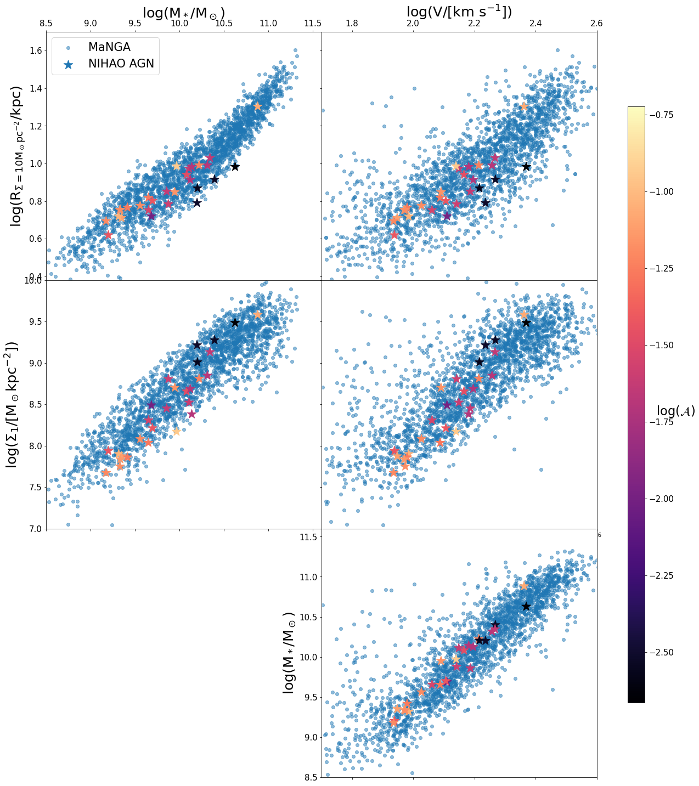
7 المعاملات المورفولوجية
علاقات القياس مكملة لدرجات الشذوذ، لكن من المتوقع أن تكون المعاملات المورفولوجية أكثر اتساقًا مع درجات الشذوذ، إذ إن كليهما مشتق من صور المجرات. نستقصي هنا ما قد يتعلمه نموذج التعلم الآلي إضافة إلى الطرائق التقليدية التي طُبقت حتى الآن في دراسات الصور الصورية. وننظر هنا أساسًا في إحصاءات Gini- (معامل gini، و، وإحصاءات الانتفاخ، Lotz et al., 2004)، وإحصاءات CAS (التركيز، واللاتناظر، والنعومة، Conselice, 2003)، وإحصاءات MID (تعدد الأنماط، والشدة، والانحراف، Freeman et al., 2013). ويمكن العثور على مراجعة جيدة لتعريف هذه المعاملات في Rodriguez-Gomez et al. (2019). نحسب المعاملات المورفولوجية لمجرات NIHAO NoAGN وNIHAO AGN ومجموعة اختبار SDSS باستخدام شيفرة statmorph المبينة أيضًا في Rodriguez-Gomez et al. (2019).
في الشكل 12 نقارن درجات الشذوذ بالمعاملات المورفولوجية عبر NIHAO وSDSS. تتفق كثير من المعاملات المورفولوجية مع درجة الشذوذ، كما في إحصاءات MID. ففي هذه الحالات تحصل مجرات NIHAO على درجة شذوذ أفضل عندما يطابق توزيع معاملاتها المورفولوجية توزيع مجرات SDSS على نحو أفضل. وعلاوة على ذلك، فإن الأداء العام لـ NIHAO NoAGN وNIHAO AGN متشابه تمامًا من حيث معظم المعاملات المورفولوجية، وهو ما يتفق مع ما وُجد في القسم 5.2 اعتمادًا على درجات الشذوذ. غير أن درجات الشذوذ تبدو غير متفقة مع بعض المعاملات المورفولوجية الأخرى. فعلى سبيل المثال، في حالتي اللاتناظر والنعومة88 8 قد تكون قيم اللاتناظر والنعومة العالية عند الطرف منخفض الكتلة من تجمع المجرات ناجمة، على نحو محتمل، عن اختيار PSF غاوسية مفردة بدلًا من PSF غير الغاوسية في صور SDSS الحقيقية(Stoughton et al., 2002; Xin et al., 2018)، لأن مناطق تشكّل النجوم المتكتلة غالبًا ما تكون مدمجة الحجم، كما هو مبين في Bignone et al. (2020); de Graaff et al. (2022). ومن الممكن أن تؤثر القيمة المتزايدة للاتناظر أيضًا في درجة الشذوذ، وهي مقياس كلي يتكون من 128 سمة. وسنستكشف الأوزان بين السمات المختلفة في عمل لاحق.، توجد أدنى درجات الشذوذ لـ NIHAO AGN عند أعلى الكتل، حيث يتباعد توزيع اللاتناظر والنعومة بين NIHAO AGN وSDSS. وإضافة إلى ذلك، في حالة ، على الرغم من أن توزيع بين NIHAO وSDSS يتطابق جيدًا إلى حد معقول عبر جميع حاويات الكتلة، فإن درجة الشذوذ يمكن أن تظل متغيرة. ويُظهر الاتفاق بين المعاملات المورفولوجية ودرجات الشذوذ وجود بعض التداخلات بين هذين النهجين، بينما يشير الاختلاف بين المعاملات المورفولوجية ودرجات الشذوذ إلى أن النهجين غير متكافئين.
وبخلاف علاقات القياس المبنية على الخواص الفيزيائية، فإن المعاملات المورفولوجية ودرجات الشذوذ تستندان كلتاهما إلى صور المجرات. لذلك ليس مفاجئًا أن تكون علاقات القياس ودرجات الشذوذ متكاملة، في حين تتقارب المعاملات المورفولوجية ودرجات الشذوذ أكثر وتتشارك كثيرًا من مواطن التداخل. غير أن المعاملات المورفولوجية مقاييس خاضعة للإشراف لوصف صور المجرات، بينما يمثل GANomaly نهجًا غير خاضع للإشراف يلخص صورة المجرة في 128 سمة. ويضمن النهج الخاضع للإشراف بحكم بنائه قابلية أكبر للتفسير، بينما يهدف النهج غير الخاضع للإشراف إلى استغلال كامل معلومات صور المجرات قدر الإمكان. ويمكن لـ GANomaly، المحسَّن لاستخراج سمات قادرة على إعادة بناء صورة مجرة على نمط SDSS بالكامل، أن يستغل معلومات من صورة المجرة أكثر مما تستغله مجموعة من المعاملات المورفولوجية المحددة بشريًا. ويمكن استكشاف الصلة الدقيقة بين درجة الشذوذ والمعاملات المورفولوجية بربط فضاء سمات GANomaly بالمعاملات المورفولوجية. غير أن حجم فضاء سمات GANomaly الحالي البالغ 128 كبير جدًا بحيث يصعب تفسيره بسهولة. وفي الملحق A حاولنا خفض بعد فضاء السمات باستخدام تحليل المركبات الرئيسة (PCA). وفي عمل قادم، سنُدخل الندرة في فضاء سمات GANomaly ونشجع فضاء السمات على الانكماش تلقائيًا إلى حجم أمثل. وسيكون فضاء سمات sparse-GANomaly أكثر قابلية للتفسير، وستُدرس صلته بالمعاملات المورفولوجية دراسة شاملة، بما يتيح الاستغلال الكامل للصور الصورية مع تعظيم قابلية التفسير.
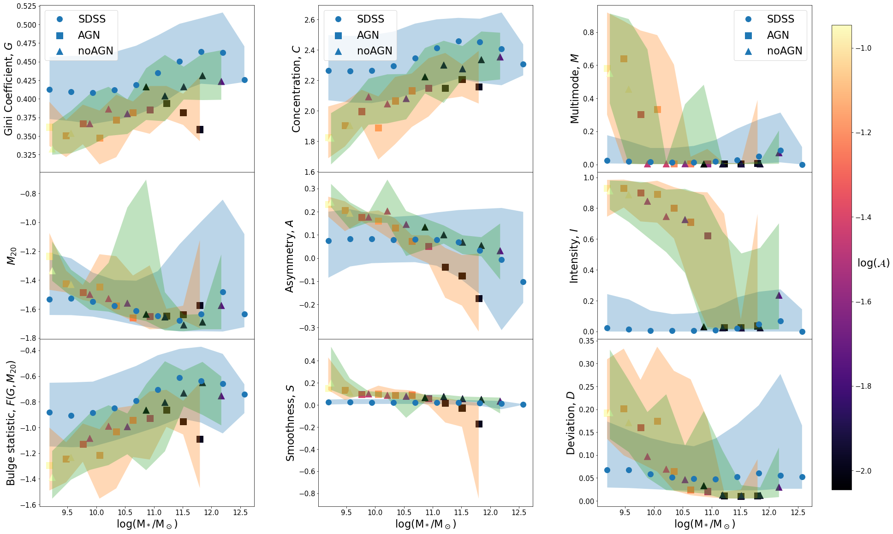
8 الخلفية
عند التمعن في أي «صورة مجرة» مشار إليها في هذا العمل (مثل الشكل 3،9)، قد يلاحظ المرء أن مساحة كبيرة من الصورة تشغلها الخلفية (فراغات سوداء وتوابع)، لا المجرة محل الاهتمام. أشار Zanisi et al. (2021) إلى أن الخلفية لها أثر غير مهمل في حكم الشذوذ عند استخدام PixelCNN مفردة. يعمل PixelCNN بطريقة مشابهة للخسارة السياقية في GANomaly، ، حيث تُقارن كل من الصورة الأصلية والمعاد بناؤها بكسلًا ببكسل. وينعكس أي اختلاف في أي بكسل في درجة الشذوذ، بغض النظر عما إذا كان البكسل ينتمي إلى المجرة أم إلى الخلفية. واضطر Zanisi et al. (2021) إلى معالجة هذه المسألة بتدريب شبكتين منفصلتين من PixelCNN. أما في GANomaly، فتُعرَّف درجة الشذوذ فقط بخسارة المُرمِّز ، أي الفرق بين السمات الأصلية والمعاد بناؤها. وينبغي لأي ضجيج في الخلفية لا يكون سمة مشتركة بين مجموعة التدريب ألا يؤثر بدرجة ملحوظة في درجة الشذوذ. فعلى سبيل المثال، في الشكل 13، أُزيل تابع خلفي يدويًا من مجرة SDSS مختارة عشوائيًا. ويؤدي هذا التغير في الخلفية بالفعل إلى فرق واضح في المتبقي على مستوى البكسل، كما تنبأ (Zanisi et al., 2021)، لكن درجة الشذوذ تبقى مستقرة إلى حد بعيد.
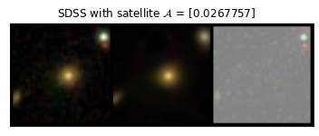
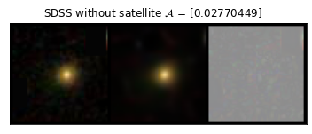
9 الاستنتاجات
في هذه الورقة، قدمنا خوارزمية كشف شذوذ هي GANomaly، تُدرَّب فقط على مجرات حقيقية بهدف تقييم محاكاة المجرات كميًا. واستنادًا إلى فكرة كشف الشذوذ بإعادة البناء، يجمع GANomaly بين GAN وشبكة مُرمِّز تلقائي، بحيث يلخص أولًا صورة الدخل في تمثيلها في فضاء السمات/الفضاء الكامن، ثم يعيد بناء الصورة نفسها. ويُدرَّب GANomaly بالكامل على مجموعة بيانات طبيعية، ولذلك، بعد التدريب، لن تُعاد بناء أي صور شاذة أو قيم خارجة في الصورة. ويُقاس الشذوذ كميًا بتعريف درجة الشذوذ بوصفها الفرق في فضاء السمات قبل إعادة البناء وبعدها. وعلاوة على ذلك، نهتم فقط بدرجات الشذوذ النسبية بين مجموعات المحاكاة المختلفة. لاحظ أن هذه الاستراتيجية تضمن كذلك ألا تدخل أي لااتساق في عملية توليد الصور الصورية في التقييم.
ولتقييم محاكاة المجرات مقارنة بالأرصاد الحقيقية، نعامل صور SDSS في نطاقات -- بوصفها بيانات المجموعة الطبيعية لتدريب GANomaly، ثم نطبق النموذج المدرَّب لتقييم الأرصاد الصورية لمحاكاة مجرات NIHAO. ومن خلال مقارنة محاكاة NIHAO مع تطبيق AGN ومن دونه، نجد أن نموذج AGN الحالي في NIHAO لا يحسن ولا يضعف الجودة العامة لصور المجرات. وإضافة إلى ذلك، نجد أن الدقة الإضافية في المحاكاة لا تؤثر في جودة الصورة الصورية بعد الالتفاف.
والأهم من ذلك أننا نرى أيضًا أن الالتزام بعلاقات قياس المجرات لا يرتبط مباشرة بدرجات الشذوذ. وهذا يشير إلى أن النجاح في إعادة إنتاج مجموعات معينة من خواص المجرات وعلاقات قياسها لا يعلن الانتصار النهائي في محاكاة كوننا، بل إن مجرة محاكاة تلائم علاقات القياس جيدًا يمكن أن تُظهر مع ذلك شذوذات عند النظر إلى صورة المجرة الكاملة. وبالمثل، فإن النظر إلى الصور وحدها قد يغفل بعض الرؤى الفيزيائية المهمة التي لا يمكن وصفها بالكامل بالصورة نفسها. ولتحقيق الهدف النهائي المتمثل في نمذجة كوننا، يجب على المحاكاة أن تعيد إنتاج كل من علاقات القياس المرصودة وصور المجرات الواقعية.
ومن جهة أخرى، يكرس كل من المعاملات المورفولوجية وGANomaly جهده لفحص صور المجرات. تفحص المعاملات المورفولوجية الصورة بطريقة خاضعة للإشراف، بمعاملات معرفة بوضوح، ومن ثم فهي أكثر قابلية للتفسير. أما GANomaly فهو طريقة تعلم عميق غير خاضعة للإشراف تبني فضاء سمات من البيانات، بحيث يستطيع فضاء السمات تمثيل صورة مجرة واقعية تمثيلًا كاملًا. يملك النهجان كليهما مزاياهما بوضوح، وسيتيح الجمع بينهما لنا تسخير قوة التعلم العميق من دون فقدان قابلية التفسير، ومن ثم استغلال المعلومات الغنية التي تحملها صور المجرات استغلالًا كاملًا.
يفحص نموذج GANomaly الموصوف في هذه الورقة صور المجرات المرصودة، أو المرصودة صوريًا، في نطاقات SDSS --. ولا يقتصر النموذج مطلقًا على حزمة محاكاة بعينها مثل NIHAO، بل يمكن تطبيقه مباشرة على أي محاكاة مجرات أخرى متى صُنعت أرصاد صورية في نطاقات SDSS --. كما أن الخوارزمية نفسها غير محدودة بتلسكوب أو مسح بعينه (SDSS)، ولا بمجموعة خرائط معينة (خريطة شدة النطاقات --). ويمكن إعادة تدريب GANomaly على صور من تلسكوبات أخرى، وبأطوال موجية مختلفة، أو حتى على خرائط مختلفة، مثل خرائط السرعة وخرائط الكثافة، لكشف الشذوذ إما في البيانات المحاكاة أو القيم الخارجة في الأرصاد نفسها.
ومع اتجاهنا نحو عصر من المحاكاة من الجيل التالي، بنماذج أكثر تطورًا، ودقة أعلى، وحجوم أكبر، وفيزياء أكثر شمولًا، وفي الوقت نفسه نحو مرحلة متدفقة من البعثات الرصدية الكبرى والمسوح الواسعة، تزداد الحاجة إلى تقنيات تحليل قادرة على الاستفادة المثلى من هذا التدفق الهائل من البيانات (بما يتجاوز الإحصاءات الملخصة الخالصة) الآتي من المحاكاة والأرصاد معًا. وستسهم تقنيات كشف الشذوذ، مثل GANomaly، إلى جانب الطرائق التقليدية مثل علاقات القياس والمعاملات المورفولوجية، في إلقاء ضوء جديد على فهمنا للكون.
الشكر والتقدير
تستند هذه المادة إلى عمل مدعوم من Tamkeen ضمن منحة CASS التابعة لمعهد الأبحاث في جامعة نيويورك أبوظبي. أُجري هذا البحث على موارد الحوسبة عالية الأداء في جامعة نيويورك أبوظبي. ونعرب عن امتناننا لـ Gauss Centre for Supercomputing e.V. (www.gauss-centre.eu) لتمويل هذا المشروع من خلال توفير وقت حوسبة على الحاسوب الفائق GCS SuperMUC في Leibniz Supercomputing Centre (www.lrz.de). وأتاح هذا البحث عدد كبير من حزم Python المتميزة، بما في ذلك Pynbody (Pontzen et al., 2013)، وPyTorch (Paszke et al., 2019)، وAstropy (Astropy Collaboration et al., 2013, 2018, 2022)، وNumPy (Harris et al., 2020)، وMatplotlib (Hunter, 2007)، وseaborn (Waskom, 2021). يقر MP بالدعم المالي من برنامج البحث والابتكار Horizon 2020 التابع للاتحاد الأوروبي بموجب اتفاقية منحة Marie Sklodowska-Curie رقم 896248. وقد أُتيح إسهام TB في هذا المشروع بفضل تمويل من Carl Zeiss Foundation.
توافر البيانات
يقع نموذج GANomaly الجاهز للاستخدام لتقييم محاكاة المجرات، إلى جانب الشيفرة اللازمة لإنتاج كل الرسوم في هذه الورقة، في https://github.com/ZehaoJin/Rate-galaxy-simulation-with-Anomaly-Detection.
References
- Agertz et al. (2021) Agertz O., et al., 2021, MNRAS, 503, 5826
- Akcay et al. (2019) Akcay S., Atapour-Abarghouei A., Breckon T. P., 2019, in Jawahar C. V., Li H., Mori G., Schindler K., eds, Computer Vision – ACCV 2018. Springer International Publishing, Cham, pp 622–637
- Arjovsky et al. (2017) Arjovsky M., Chintala S., Bottou L., 2017, in Precup D., Teh Y. W., eds, Proceedings of Machine Learning Research Vol. 70, Proceedings of the 34th International Conference on Machine Learning. PMLR, pp 214–223, https://proceedings.mlr.press/v70/arjovsky17a.html
- Arora et al. (2021) Arora N., Stone C., Courteau S., Jarrett T. H., 2021, MNRAS, 505, 3135
- Arora et al. (2023) Arora N., Courteau S., Stone C., Macciò A. V., 2023, MNRAS, 522, 1208
- Astropy Collaboration et al. (2013) Astropy Collaboration et al., 2013, A&A, 558, A33
- Astropy Collaboration et al. (2018) Astropy Collaboration et al., 2018, AJ, 156, 123
- Astropy Collaboration et al. (2022) Astropy Collaboration et al., 2022, apj, 935, 167
- Bignone et al. (2020) Bignone L. A., Pedrosa S. E., Trayford J. W., Tissera P. B., Pellizza L. J., 2020, MNRAS, 491, 3624
- Blank et al. (2019) Blank M., Macciò A. V., Dutton A. A., Obreja A., 2019, MNRAS, 487, 5476
- Blanton et al. (2017) Blanton M. R., et al., 2017, AJ, 154, 28
- Bondi (1952) Bondi H., 1952, MNRAS, 112, 195
- Bottrell et al. (2017a) Bottrell C., Torrey P., Simard L., Ellison S. L., 2017a, MNRAS, 467, 1033
- Bottrell et al. (2017b) Bottrell C., Torrey P., Simard L., Ellison S. L., 2017b, MNRAS, 467, 2879
- Bottrell et al. (2019) Bottrell C., et al., 2019, MNRAS, 490, 5390
- Brook & Di Cintio (2015) Brook C. B., Di Cintio A., 2015, Monthly Notices of the Royal Astronomical Society, 453, 2133
- Buck (2019) Buck T., 2019, Monthly Notices of the Royal Astronomical Society, 491, 5435
- Buck & Wolf (2021) Buck T., Wolf S., 2021, arXiv e-prints, p. arXiv:2111.01154
- Buck et al. (2018) Buck T., Ness M. K., Macciò A. V., Obreja A., Dutton A. A., 2018, ApJ, 861, 88
- Buck et al. (2019a) Buck T., Macciò A. V., Dutton A. A., Obreja A., Frings J., 2019a, MNRAS, 483, 1314
- Buck et al. (2019b) Buck T., Dutton A. A., Macciò A. V., 2019b, MNRAS, 486, 1481
- Buck et al. (2019c) Buck T., Ness M., Obreja A., Macciò A. V., Dutton A. A., 2019c, ApJ, 874, 67
- Buck et al. (2020) Buck T., Obreja A., Macciò A. V., Minchev I., Dutton A. A., Ostriker J. P., 2020, MNRAS, 491, 3461
- Buck et al. (2021) Buck T., Rybizki J., Buder S., Obreja A., Macciò A. V., Pfrommer C., Steinmetz M., Ness M., 2021, MNRAS, 508, 3365
- Buder et al. (2021) Buder S., et al., 2021, MNRAS, 506, 150
- Bundy et al. (2015) Bundy K., et al., 2015, ApJ, 798, 7
- Camps & Baes (2020) Camps P., Baes M., 2020, Astronomy and Computing, 31, 100381
- Chabrier (2003) Chabrier G., 2003, PASP, 115, 763
- Cheng et al. (2021) Cheng T.-Y., Huertas-Company M., Conselice C. J., Aragón-Salamanca A., Robertson B. E., Ramachandra N., 2021, MNRAS, 503, 4446
- Choi et al. (2016) Choi J., Dotter A., Conroy C., Cantiello M., Paxton B., Johnson B. D., 2016, ApJ, 823, 102
- Conroy et al. (2009) Conroy C., Gunn J. E., White M., 2009, ApJ, 699, 486
- Conroy et al. (2010) Conroy C., Schiminovich D., Blanton M. R., 2010, ApJ, 718, 184
- Conselice (2003) Conselice C. J., 2003, The Astrophysical Journal Supplement Series, 147, 1
- Courteau et al. (2007) Courteau S., Dutton A. A., van den Bosch F. C., MacArthur L. A., Dekel A., McIntosh D. H., Dale D. A., 2007, ApJ, 671, 203
- Croton et al. (2006) Croton D. J., et al., 2006, MNRAS, 365, 11
- DESI Collaboration et al. (2016) DESI Collaboration et al., 2016, arXiv e-prints, p. arXiv:1611.00036
- Di Mattia et al. (2019) Di Mattia F., Galeone P., De Simoni M., Ghelfi E., 2019, A Survey on GANs for Anomaly Detection, doi:10.48550/ARXIV.1906.11632, https://arxiv.org/abs/1906.11632
- Dieleman et al. (2015) Dieleman S., Willett K. W., Dambre J., 2015, Monthly Notices of the Royal Astronomical Society, 450, 1441
- Donahue et al. (2016) Donahue J., Krähenbühl P., Darrell T., 2016, Adversarial Feature Learning, doi:10.48550/ARXIV.1605.09782, https://arxiv.org/abs/1605.09782
- Dotter (2016) Dotter A., 2016, ApJS, 222, 8
- Dubois et al. (2014) Dubois Y., et al., 2014, MNRAS, 444, 1453
- Dubois et al. (2016) Dubois Y., Peirani S., Pichon C., Devriendt J., Gavazzi R., Welker C., Volonteri M., 2016, Monthly Notices of the Royal Astronomical Society, 463, 3948
- Dutton et al. (2015) Dutton A. A., Macciò A. V., Stinson G. S., Gutcke T. A., Penzo C., Buck T., 2015, MNRAS, 453, 2447
- Dutton et al. (2017) Dutton A. A., et al., 2017, Monthly Notices of the Royal Astronomical Society, 467, 4937
- Dutton et al. (2019) Dutton A. A., Macciò A. V., Buck T., Dixon K. L., Blank M., Obreja A., 2019, MNRAS, 486, 655
- Dutton et al. (2020) Dutton A. A., Buck T., Macciò A. V., Dixon K. L., Blank M., Obreja A., 2020, MNRAS, 499, 2648
- Faucher et al. (2023) Faucher N., Blanton M. R., Macciò A. V., 2023, The Astrophysical Journal, 957, 7
- Foreman-Mackey et al. (2015) Foreman-Mackey D., Sick J., Johnson B., 2015, python-fsps: Python bindings to FSPS (v0.1.1), doi:10.5281/zenodo.12157, https://doi.org/10.5281/zenodo.12157
- Freeman et al. (2013) Freeman P. E., Izbicki R., Lee A. B., Newman J. A., Conselice C. J., Koekemoer A. M., Lotz J. M., Mozena M., 2013, Monthly Notices of the Royal Astronomical Society, 434, 282
- Frosst et al. (2022) Frosst M., Courteau S., Arora N., Stone C., Macciò A. V., Blank M., 2022, MNRAS, 514, 3510
- Gallazzi et al. (2005) Gallazzi A., Charlot S., Brinchmann J., White S. D. M., Tremonti C. A., 2005, Monthly Notices of the Royal Astronomical Society, 362, 41
- Goodfellow et al. (2014) Goodfellow I., Pouget-Abadie J., Mirza M., Xu B., Warde-Farley D., Ozair S., Courville A., Bengio Y., 2014, in Ghahramani Z., Welling M., Cortes C., Lawrence N., Weinberger K., eds, Vol. 27, Advances in Neural Information Processing Systems. Curran Associates, Inc., https://proceedings.neurips.cc/paper/2014/file/5ca3e9b122f61f8f06494c97b1afccf3-Paper.pdf
- Governato et al. (2010) Governato F., et al., 2010, Nature, 463, 203
- Grogin et al. (2011) Grogin N. A., et al., 2011, ApJS, 197, 35
- Groves et al. (2008) Groves B., Dopita M. A., Sutherland R. S., Kewley L. J., Fischera J., Leitherer C., Brandl B., van Breugel W., 2008, ApJS, 176, 438
- Haardt & Madau (2012) Haardt F., Madau P., 2012, ApJ, 746, 125
- Harris et al. (2020) Harris C. R., et al., 2020, Nature, 585, 357
- Hayward & Smith (2015) Hayward C. C., Smith D. J. B., 2015, MNRAS, 446, 1512
- Hunter (2007) Hunter J. D., 2007, Computing in Science & Engineering, 9, 90
- Jonsson et al. (2010) Jonsson P., Groves B. A., Cox T. J., 2010, MNRAS, 403, 17
- Kapoor et al. (2021) Kapoor A. U., et al., 2021, MNRAS, 506, 5703
- Kirby et al. (2015) Kirby E. N., Simon J. D., Cohen J. G., 2015, ApJ, 810, 56
- Knollmann & Knebe (2009) Knollmann S. R., Knebe A., 2009, The Astrophysical Journal Supplement Series, 182, 608
- Koekemoer et al. (2011) Koekemoer A. M., et al., 2011, ApJS, 197, 36
- Lotz et al. (2004) Lotz J. M., Primack J., Madau P., 2004, The Astronomical Journal, 128, 163
- Lupton et al. (2004) Lupton R., Blanton M. R., Fekete G., Hogg D. W., O’Mullane W., Szalay A., Wherry N., 2004, Publications of the Astronomical Society of the Pacific, 116, 133
- Macciò et al. (2022) Macciò A. V., Ali-Dib M., Vulanovic P., Noori H. A., Walter F., Krieger N., Buck T., 2022, Monthly Notices of the Royal Astronomical Society, 512, 2135
- Macciò et al. (2016) Macciò A. V., Udrescu S. M., Dutton A. A., Obreja A., Wang L., Stinson G. R., Kang X., 2016, Monthly Notices of the Royal Astronomical Society: Letters, 463, L69
- Margalef-Bentabol et al. (2020) Margalef-Bentabol B., Huertas-Company M., Charnock T., Margalef-Bentabol C., Bernardi M., Dubois Y., Storey-Fisher K., Zanisi L., 2020, Monthly Notices of the Royal Astronomical Society, 496, 2346
- McKee & Ostriker (2007) McKee C. F., Ostriker E. C., 2007, ARA&A, 45, 565
- Meert et al. (2014) Meert A., Vikram V., Bernardi M., 2014, Monthly Notices of the Royal Astronomical Society, 446, 3943
- Moster et al. (2010) Moster B. P., Somerville R. S., Maulbetsch C., van den Bosch F. C., Macciò A. V., Naab T., Oser L., 2010, The Astrophysical Journal, 710, 903
- Moster et al. (2018) Moster B. P., Naab T., White S. D. M., 2018, MNRAS, 477, 1822
- Nelson et al. (2017) Nelson D., et al., 2017, Monthly Notices of the Royal Astronomical Society, 475, 624
- Oñorbe et al. (2015) Oñorbe J., Boylan-Kolchin M., Bullock J. S., Hopkins P. F., Kereš D., Faucher-Giguère C.-A., Quataert E., Murray N., 2015, MNRAS, 454, 2092
- Obreja et al. (2018) Obreja A., Macciò A. V., Moster B., Dutton A. A., Buck T., Stinson G. S., Wang L., 2018, Monthly Notices of the Royal Astronomical Society, 477, 4915
- Oord et al. (2016) Oord A. v. d., Kalchbrenner N., Kavukcuoglu K., 2016, Pixel Recurrent Neural Networks, doi:10.48550/ARXIV.1601.06759, https://arxiv.org/abs/1601.06759
- Paszke et al. (2019) Paszke A., et al., 2019, PyTorch: An Imperative Style, High-Performance Deep Learning Library, doi:10.48550/ARXIV.1912.01703, https://arxiv.org/abs/1912.01703
- Paxton et al. (2011) Paxton B., Bildsten L., Dotter A., Herwig F., Lesaffre P., Timmes F., 2011, ApJS, 192, 3
- Paxton et al. (2013) Paxton B., et al., 2013, ApJS, 208, 4
- Paxton et al. (2015) Paxton B., et al., 2015, ApJS, 220, 15
- Pillepich et al. (2018) Pillepich A., et al., 2018, MNRAS, 473, 4077
- Planck Collaboration et al. (2014) Planck Collaboration et al., 2014, A&A, 571, A16
- Pontzen et al. (2013) Pontzen A., Roškar R., Stinson G. S., Woods R., Reed D. M., Coles J., Quinn T. R., 2013, pynbody: Astrophysics Simulation Analysis for Python
- Rodriguez-Gomez et al. (2019) Rodriguez-Gomez V., et al., 2019, MNRAS, 483, 4140
- Santos-Santos et al. (2017) Santos-Santos I. M., Di Cintio A., Brook C. B., Macciò A., Dutton A., Domínguez-Tenreiro R., 2017, Monthly Notices of the Royal Astronomical Society, 473, 4392
- Schaye et al. (2014) Schaye J., et al., 2014, Monthly Notices of the Royal Astronomical Society, 446, 521
- Schaye et al. (2015) Schaye J., et al., 2015, MNRAS, 446, 521
- Schlegl et al. (2017) Schlegl T., Seeböck P., Waldstein S. M., Schmidt-Erfurth U., Langs G., 2017, Unsupervised Anomaly Detection with Generative Adversarial Networks to Guide Marker Discovery, doi:10.48550/ARXIV.1703.05921, https://arxiv.org/abs/1703.05921
- Sérsic (1963) Sérsic J. L., 1963, Boletin de la Asociacion Argentina de Astronomia La Plata Argentina, 6, 41
- Smith et al. (2022) Smith M. J., Geach J. E., Jackson R. A., Arora N., Stone C., Courteau S., 2022, MNRAS, 511, 1808
- Snyder et al. (2015) Snyder G. F., et al., 2015, MNRAS, 454, 1886
- Springel & Hernquist (2003) Springel V., Hernquist L., 2003, MNRAS, 339, 289
- Springel et al. (2005) Springel V., Di Matteo T., Hernquist L., 2005, MNRAS, 361, 776
- Stinson et al. (2006) Stinson G., Seth A., Katz N., Wadsley J., Governato F., Quinn T., 2006, Monthly Notices of the Royal Astronomical Society, 373, 1074
- Stinson et al. (2012) Stinson G. S., Brook C., Macciò A. V., Wadsley J., Quinn T. R., Couchman H. M. P., 2012, Monthly Notices of the Royal Astronomical Society, 428, 129
- Storey-Fisher et al. (2021) Storey-Fisher K., Huertas-Company M., Ramachandra N., Lanusse F., Leauthaud A., Luo Y., Huang S., Prochaska J. X., 2021, Monthly Notices of the Royal Astronomical Society, 508, 2946
- Stoughton et al. (2002) Stoughton C., et al., 2002, AJ, 123, 485
- Tohill et al. (2023) Tohill C.-B., Bamford S., Conselice C., Ferreira L., Harvey T., Adams N., Austin D., 2023, arXiv e-prints, p. arXiv:2306.17225
- Trayford et al. (2017) Trayford J. W., et al., 2017, MNRAS, 470, 771
- Tremmel et al. (2017) Tremmel M., Karcher M., Governato F., Volonteri M., Quinn T. R., Pontzen A., Anderson L., Bellovary J., 2017, Monthly Notices of the Royal Astronomical Society, 470, 1121
- Tremonti et al. (2004) Tremonti C. A., et al., 2004, ApJ, 613, 898
- Tully & Fisher (1977) Tully R. B., Fisher J. R., 1977, A&A, 54, 661
- Vogelsberger et al. (2014) Vogelsberger M., et al., 2014, MNRAS, 444, 1518
- Vogelsberger et al. (2020) Vogelsberger M., Marinacci F., Torrey P., Puchwein E., 2020, Nature Reviews Physics, 2, 42
- Wadsley et al. (2017) Wadsley J. W., Keller B. W., Quinn T. R., 2017, MNRAS, 471, 2357
- Wang et al. (2015) Wang L., Dutton A. A., Stinson G. S., Macciò A. V., Penzo C., Kang X., Keller B. W., Wadsley J., 2015, Monthly Notices of the Royal Astronomical Society, 454, 83
- Waskom (2021) Waskom M. L., 2021, Journal of Open Source Software, 6, 3021
- Waterval et al. (2022) Waterval S., et al., 2022, Monthly Notices of the Royal Astronomical Society, 514, 5307
- Xin et al. (2018) Xin B., Željko Ivezić Lupton R. H., Peterson J. R., Yoachim P., Jones R. L., Claver C. F., Angeli G., 2018, The Astronomical Journal, 156, 222
- Zanisi et al. (2021) Zanisi L., et al., 2021, MNRAS, 501, 4359
- Zenati et al. (2018) Zenati H., Foo C. S., Lecouat B., Manek G., Chandrasekhar V. R., 2018, Efficient GAN-Based Anomaly Detection, doi:10.48550/ARXIV.1802.06222, https://arxiv.org/abs/1802.06222
- de Graaff et al. (2022) de Graaff A., Trayford J., Franx M., Schaller M., Schaye J., van der Wel A., 2022, MNRAS, 511, 2544
Appendix A استكشاف الفضاء الكامن لـ GANomaly
للحصول على فهم أفضل للمتغيرات الكامنة التي يستخدمها GANomaly لترميز صور مجراتنا، نجري تحليل المركبات الرئيسة (PCA) على الفضاء الكامن ذي الأبعاد 128، z. لاحظ أن درجة الشذوذ تُعرَّف بالمسافة في الفضاء الكامن قبل إعادة البناء وبعدها، -. ومن ثم، فإن العثور هنا على مركبة رئيسة مهمة في يعني فقط أن هذه المركبة الرئيسة ذات أهمية للصورة قبل إعادة البناء، لكنه لا يكشف شيئًا عن درجة الشذوذ، -. لذلك، لا نستكشف هنا ما تعنيه درجة الشذوذ ولا ما المعيار الذي يستخدمه GANomaly لتقييم صورة مجرة، بل نحاول فهم ما أهم الخواص لصورة المجرة.
في الشكل 14، نعرض كسر التباين المفسَّر لأول اثنتي عشرة مركبة رئيسة (أعلى) ولكل المركبات الرئيسة بمقياس لوغاريتمي (أسفل). أُجري PCA بصورة منفصلة لمجرات SDSS ولكل مجموعة من محاكاة NIHAO. ويتضح من هذه الرسوم أن البعد الذاتي للفضاء الكامن مرتفع نسبيًا، لأن المركبة الرئيسة الأولى لعينات SDSS لا تفسر إلا نحو في المئة من التباين الكلي. وعلى الرغم من أن السلوك العام لـ SDSS ومختلف عينات NIHAO متشابه، فإن هناك فرقًا يتمثل في أن المركبات الأقل أهمية تفسر تباينًا أكبر في SDSS مقارنة بـ NIHAO. ونخمن أن ذلك قد يرجع إلى ضجيج رصدي فعلي ناتج من التأثيرات الآلية وغيرها، وهو ضجيج يصعب ضغطه.
وبصرف النظر عن ذلك، نجد أن عينات NIHAO تقع عمومًا ضمن النطاق الواقعي للفضاء الكامن الذي تمتد عليه مجرات SDSS، كما يبين الشكل 15، حيث نرسمها في مستوى أول مركبتين رئيستين. لبعض مجرات NIHAO قيم PC1s أدنى قليلًا من قيم مجرات SDSS، ولبعض مجرات NIHAO قيم PC2s أعلى أو أدنى من قيم مجرات SDSS.
في الشكل 16 نعرض عينة من صور مجرات SDSS مرتبة حسب قيمة PC الأولى (اللوحة العلوية)، وعينة مرتبة حسب قيمة PC الثانية (اللوحة السفلية). ويبدو أن المركبة الرئيسة الأولى ترتبط بالحجم الظاهري للمجرة في الصورة، والثانية باللون. وفي ضوء هذا التفسير، يبين الشكل 15 أن بعض مجرات NIHAO لها أحجام ظاهرية صغيرة جدًا، ويمكن معالجة ذلك في أعمال مستقبلية. وتمتلك بعض مجرات NIHAO الأخرى ألوانًا مفرطة التطرف قد تعود إلى أسباب عدة، مثل اختلاف في SFR أو حدود نموذج الغبار، لكن المعنى الفيزيائي الدقيق لذلك يحتاج إلى استكشاف بمزيد من التفصيل، ونتركه لعمل مستقبلي.
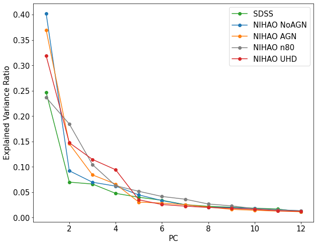
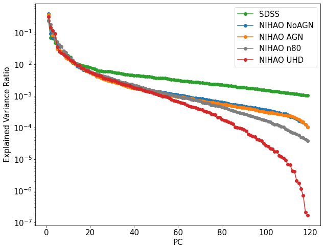
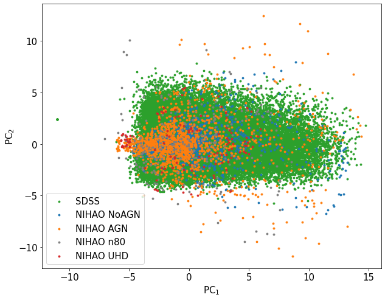
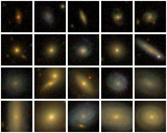 |
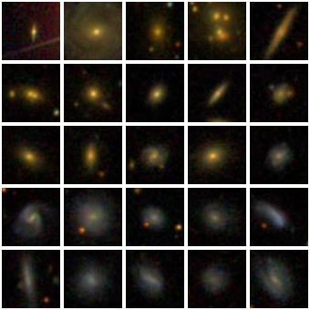 |